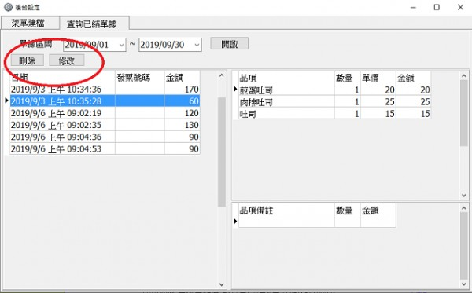

沒有發票作廢的流程嗎?
這些問題 其他使用者都沒遇過嗎?
1 個回答
您好
1.作廢發票:將收執聯發票回收集中保管,蓋上"作廢"字樣印章,申報營業稅時,將發票交給配合的會計師/記帳士處理,如果想去修改POS系統和申報的數額一致,可去後台修改/刪除單據資料

2,重開發票 就是再打一張新的單,一個品項填上要開立的金額
POS開立發票後續的處理,目的都是為了申報營業稅,台灣絕大部分的中小企業,都是委託坊間的記帳士/會計師做處理
所謂的二聯式發票,就是有紙本兩聯,一聯給客戶,一聯存根做申報資料用,站在POS系統的角度,就是印出收執聯和存根聯而達到不用去手寫發票
每一期申報營業稅,只要將(存根聯)和(作廢發票的收執聯) 紙本資料全交給記帳士/會計師去做處理就行了
聰明一點的會計師/記帳士 會跟他的客戶要POS匯出資料
會計師/記帳士如果懂得運用的話,能轉入自己在用的稅務系統,會為會計事務所省去大量輸入的時間
簡單來說 絕大部分的用戶,申報營業稅都是委外處理,每一期申報,就是把所有的紙本存根資料,丟給(會計師/記帳士)處理,國稅局查稅的依據也是紙本資料,即使會計師/記帳士是運用匯出的資料作申報,也會去核對一下紙本的內容,也因此紙本存根聯才是重點 ,POS系統的資料始終是輔助的角色
對POS用戶來說,申報營業稅都是委外,只要能提供紙本存根發票就好,其他後續動作都是會計師/記帳士處理掉了